20 Numerical Feature Scaling
Lists of numbers come in all shapes and sizes. But why should we care?
Many Machine Learning algorithms operate on data as vectors or points in space. KNN generates predictions based on the distance or similarities between observations. Decision Trees split the feature space to separate data from different classes or labels.
Thinking of nearest neighbours, feature scaling does matter. Let’s imagine you are building a model to predict property prices, using two features:
- Surface Area in m²
- Number of rooms
Example properties in the training data include:
| Property | Size (m²) | Number of rooms | Price (k €) |
|---|---|---|---|
| A | 60 | 2 | 320 |
| B | 80 | 3 | 400 |
| C | 120 | 5 | 350 |
| D | 70 | 2 | 310 |
| E | 150 | 6 | 600 |
| F | 90 | 4 | 330 |
When plotting this data over a two-dimensional space on the interval [0, 200], we get:
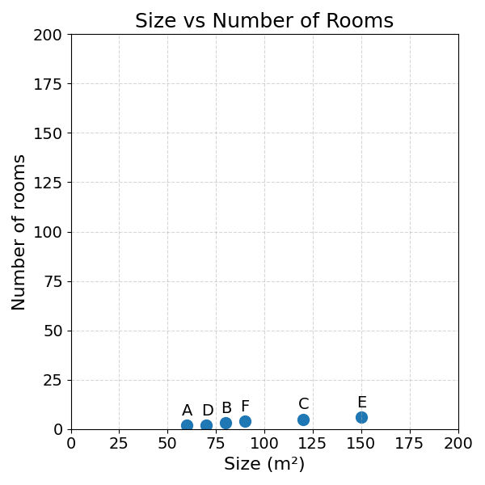
As you can see, most of the variation is generated by the surface area. This is why the data appears so compressed.
The dominance of surface area over the number of rooms can also be seen when calculating the Euclidean Distance between properties.
\[ \begin{aligned} &\text{Distance between property A and B:} \\ &d_{AB} = \sqrt{(80 - 60)^2 + (3 - 2)^2} \\ &\phantom{d_{AB}} = \sqrt{20^2 + 1^2} \\ &\phantom{d_{AB}} = \sqrt{400 + 1} \quad \text{surface area dominates}\\ &\phantom{d_{AB}} = \sqrt{401} \\ &\phantom{d_{AB}} \approx 20.02 \\ \\ &\text{Distance between property A and C:} \\ &d_{AC} = \sqrt{(120 - 60)^2 + (5 - 2)^2} \\ &\phantom{d_{AC}} = \sqrt{60^2 + 3^2} \\ &\phantom{d_{AC}} = \sqrt{3600 + 9} \quad \text{here again}\\ &\phantom{d_{AC}} = \sqrt{3609} \\ &\phantom{d_{AC}} \approx 60.08 \end{aligned} \]
As you can see, in both cases, the distance between two properties is nearly fully determined by the surface area difference. The distance between number of rooms is dwarfed by the difference in surface area. We could get a more even distribution by rescaling the axes:
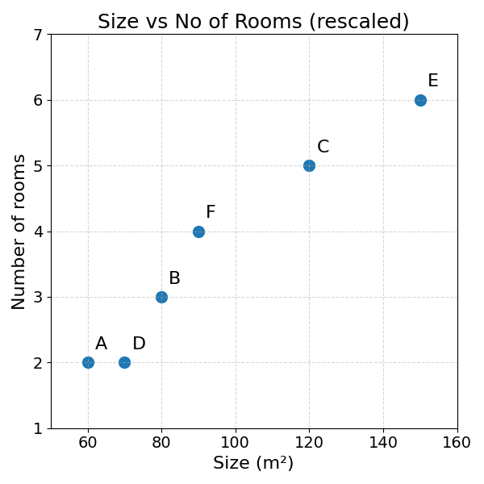
While rescaling the axes is a better way to visualise the data, it does not solve the problem in calculating the distance between two observations.
20.1 The Mechanics
To do so, we need to scale both features so that they (roughly) have the same range, mean and variance:
- Range is the distance between the minimum and the maximum of a series.
- Mean is the average of a series
- Variance can have many definitions, for now, let’s define it as the degree to which numbers fluctuate
As an example, the surface area column has a higher variance than the number of rooms column. The numbers fluctuate more from one to the other. As a consequence, surface area has a larger impact than the number of rooms on the distance function.
What if we could transform both the number of rooms and the surface area to series of number between 0 and 1? This would solve the issue of distance calculation. The following section will explore a way to do this.
20.2 Min-Max Scaling
Let’s imagine the following series of numbers: \(\{0, 30, 40, 60, 90, 100\}\)
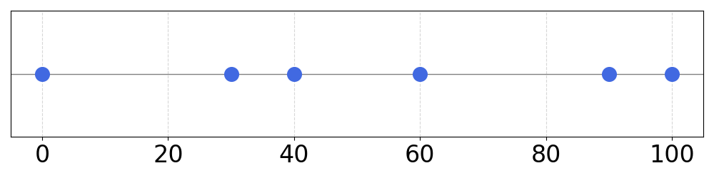
A simple way to get these numbers in the 0-1 interval would be to divide all of them by 100:
| Value | Scaled |
|---|---|
| 0 | 0.00 |
| 30 | 0.30 |
| 40 | 0.40 |
| 60 | 0.60 |
| 90 | 0.90 |
| 100 | 1.00 |

If the original series has numbers going from 0-150: \(\{0, 10, 60, 70, 120, 150\}\)
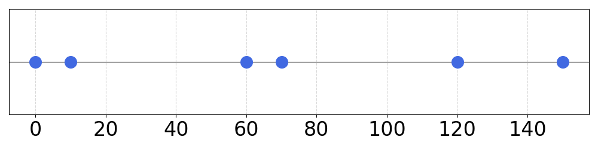
We could also get it back to the 0-1 interval by dividing all numbers by 150, the maximum of the series:
| Value | Scaled |
|---|---|
| 0 | 0.00 |
| 10 | 0.07 |
| 60 | 0.40 |
| 70 | 0.47 |
| 120 | 0.80 |
| 150 | 1.00 |
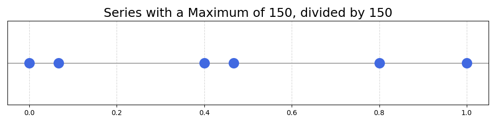
This is a good start. For series ranging from 0 to a given number, we can divide all numbers in the series by their maximum. This scales the series to the range 0-1.
Now, what if the numbers in the series range from 50 to 250?
Series: \(\{50, 90, 120, 170, 220, 250\}\)
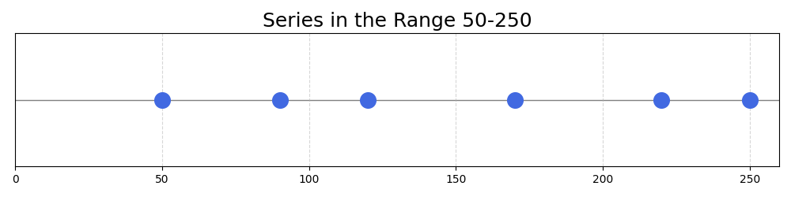
Dividing the numbers of the series by the maximum would not make the full use of the 0-1 interval:
| Value | Scaled (÷250) |
|---|---|
| 50 | 0.20 |
| 90 | 0.36 |
| 120 | 0.48 |
| 170 | 0.68 |
| 220 | 0.88 |
| 250 | 1.00 |

The minimum achieved there is \(50/250 = 0.2\). This means that 20% of the allowed range will be left empty, a suboptimal outcome. How could this problem be solved?
In the end, we want the minimum of the series to be mapped to 0, and the maximum to 1. To achieve this, we can use the following formula:
\[ \text{Scaled Value} = \frac{x - x_{\text{min}}}{x_{\text{max}} - x_{\text{min}}} \]
With:
- \(x\) the value to be scaled
- \(x_{\text{min}}\) and \(x_{\text{max}}\) the minimum and maximum of the series
Let’s take this formula part by part:
- The numerator: \(x - x_{\text{min}}\), computes the distance between the value and the minimum
- The denominator: \(x_{\text{max}} - x_{\text{min}}\), divides this distance by the largest distance in the series, the distance between the maximum and minimum values
This formula will be maximised when the value is the maximum of the series, \(\text{original value} = x_{\text{max}}\):
\[ \text{Scaled Value of Max} = \frac{x_{\text{max}} - x_{\text{min}}}{x_{\text{max}}} - x_{\text{min}} = 1 \]
And be minimised when the value is the minimum of the series, \(\text{original value} = x_{\text{min}}\):
\[ \text{Scaled Value of Min} = \frac{x_{\text{min}} - x_{\text{min}}}{x_{\text{max}} - x_{\text{min}}} = 0 \]
With this formula, any series of numbers can be mapped to the range \([0,1]\), solving the problems.
The following table shows its application to the example series above:
| Value | Scaled (÷250) | Scaled (MinMax) |
|---|---|---|
| 50 | 0.20 | 0.00 |
| 90 | 0.36 | 0.20 |
| 120 | 0.48 | 0.35 |
| 170 | 0.68 | 0.60 |
| 220 | 0.88 | 0.85 |
| 250 | 1.00 | 1.00 |
Exercise 20.1 Use Min-Max Scaling to map both surface area and number of rooms to the range \([0,1]\)
| Property | Size (m²) | Number of rooms |
|---|---|---|
| A | 60 | 2 |
| B | 80 | 3 |
| C | 120 | 5 |
| D | 70 | 2 |
| E | 150 | 6 |
| F | 90 | 4 |
20.3 Standardisation
The following section will get a bit more mathematical and can be skipped (next section).
Min-Max Scaling is not the only way to preprocess a series of numbers in different scales. Another approach is called Standardisation. The idea of standardisation is to make the distributions of the series similar. The distribution is a representation of how frequently the values of a variable occur.
Let’s make this more concrete with an example:

These series have very different distributions. The difference of scale would have a negative impact on Machine Learning algorithms like KNN.
Why can we say that these two series have different distributions?
- They do not have the same mean or centre
- They do not have the same spread or variance around their respective means
These are the two discrepancies that Standardisation aims to correct.
20.3.1 Describing a series
Before we start, it is important to define some important concepts of descriptive statistics.
Breaking this term down:
- Statistics is a branch of mathematics focussing on the collection and analysis of collections of data
- Descriptive statistics is a branch of statistics concerned with the summarisation and description of a collection of data
The Minimum and Maximum of a series are descriptive statistics, representing the lowest and highest number of a collection of numbers.
This section will introduce further concepts in descriptive statistics:
- Mean
- Variance
- Standard Deviation
If you are already familiar with these, feel free to skip to the next section.
20.3.1.1 Mean
The mean represents the “centre” of a collection of numbers. There are different types of means in mathematics. This book will focus on the arithmetic mean, also referred to as the “average”. It is noted \(\bar{x}\) or \(\mu\).
There are other types of means, used to average different types of values. They all have different properties, advantages and drawbacks
Geometric mean: \(\left(\prod_{i=1}^n x_i\right)^{1/n}\). It is useful for averaging ratios, growth rates, or percentages. The scary \(\prod_{i=1}^n\) is the letter pi in capital letter, representing a product. \(\prod_{i=1}^n i = 1 \cdot 2 \cdot \dots \cdot n\)
Using geometric means, a single 0 in the series will make the mean 0. It is still widely used in economics to average multiplicative phenomena like rates of growth.
Harmonic mean: \(\left(\frac{1}{n}\sum_{i=1}^n \frac{1}{x_i}\right)^{-1}\). It is useful for rates, such as model Precision or Recall (Model Evaluation chapter).
The harmonic mean of model Precision and Recall is called the F1-score. It is commonly used to find models that have a good trade-off of both metrics.
\[ F_1 = 2 \cdot \frac{\text{Precision} \cdot \text{Recall}}{\text{Precision} + \text{Recall}} \]
The arithmetic mean of a series of \(n\) observations, \(\{x_1, x_2, \dots, x_n\}\) is computed with the following formula:
\[ \bar{x} = \frac{x_1 + x_2 + \cdots + x_n}{n} \]
Using the \(\Sigma\) summation operator: \[ \bar{x} = \frac{1}{n} \sum_{i=1}^n x_i \]
Both notations are equivalent. If you find the \(\Sigma\) notation intimidating, refer to the Distance chapter for an intuitive explanation.
If you ever calculated your average grade at school, you probably used an arithmetic mean or a weighted average.
As an example, these two series have different means:
| Series 1 | Series 2 |
|---|---|
| 1 | 4 |
| 2 | 8 |
| 4 | 10 |
| 5 | 12 |
| 8 | 16 |
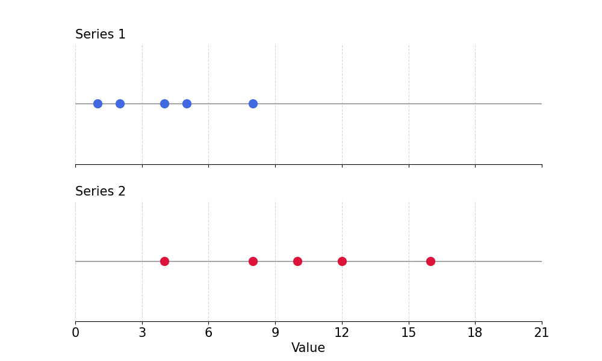
The mean of the first series can be calculated with the formula shown above:
\[ \text{Mean}_{x_1} = \frac{1 + 2 + 4 + 5 + 8}{5} = 4 \]
Exercise 20.2 Show that the mean of the second series is equal to \(10\).
20.3.1.2 Variance and Standard Deviation
The following two series have the same mean, and yet, they look very different:
| Series 1 | Series 2 |
|---|---|
| 7 | 4 |
| 8 | 8 |
| 10 | 10 |
| 11 | 12 |
| 14 | 16 |
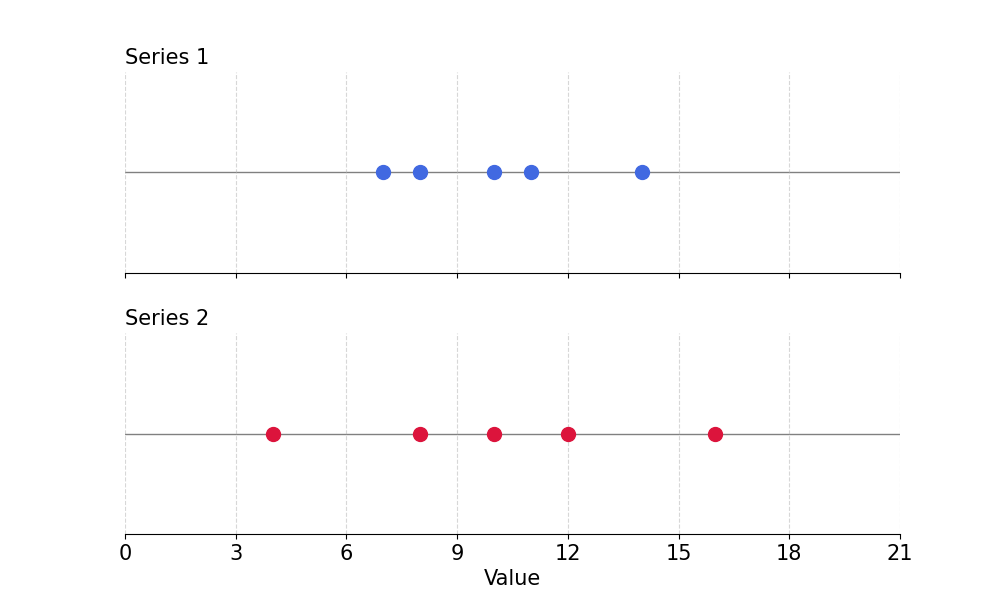
The main difference between these two series is that the second has a much greater variance than the first. Variance refers to the spread of the individual values around the mean.
How would you quantify the spread of values around the mean? How would you summarise this spread in a single number?
Hint: You could refer to the Regression Model Evaluation chapter.
The distance between an individual value (\(x\)) and the mean (\(\bar{x}\)) can be calculated as follows:
\[ x - \bar{x} \]
This works for a single value. Now, how would you aggregate these distances? Remember that positive and negative distances should not cancel out.
If you thought of using the absolute value or squared differences, well done! This is the right intuition. The variance is the average square difference between individual values and the mean.
\[ \mathrm{Var}(x) = \frac{(x_1 - \bar{x})^2 + (x_2 - \bar{x})^2 + \cdots + (x_n - \bar{x})^2}{n} \]
Sigma notation: \[ \mathrm{Var}(x) = \frac{1}{n} \sum_{i=1}^n (x_i - \bar{x})^2 \]
Does this remind you of a formula? This is very similar to the Mean Squared Error (MSE), the average squared difference between model predictions and true labels. The variance is in a sense the MSE of the average.
If a model kept predicting the average for all observations, its Mean Squared Error would be the variance!
The variance for the first series can be computed as follows:
\[ \begin{aligned} \bar{x}_1 &= \frac{7 + 8 + 10 + 11 + 14}{5} = 10 \\ \mathrm{Var}(x_1) &= \frac{(7-10)^2 + (8-10)^2 + (10-10)^2}{5} \\ &\quad + \frac{(11-10)^2 + (14-10)^2}{5} \\ &= \frac{9 + 4 + 0 + 1 + 16}{5} = \frac{30}{5} = 6 \end{aligned} \]
Exercise 20.3 Compute the variance of the second series. Prove that it is \(16\).
Is there something strange with these variance numbers? Similar to the Mean Squared Errors, they are much larger than the scale of the original series.
How would you solve this problem? Here again, the Regression Model Evaluation chapter could be helpful. Just like the Mean Squared Error and the Root Mean Squared Error, you could simply take the square root of the variance.
This number gives you a much more interpretable idea of the typical spread between individual values and the mean of a series. This measure is called the Standard Deviation, commonly noted \(\sigma\).
\[ \sigma = \sqrt{\mathrm{Var}(x)} \]
This standard deviation measures the average spread from the mean in a series.
As surprising as it may seem, all the datasets have the same mean, variance and standard deviation for both \(x\) and \(y\). This is the famous Ascombe Quartet.
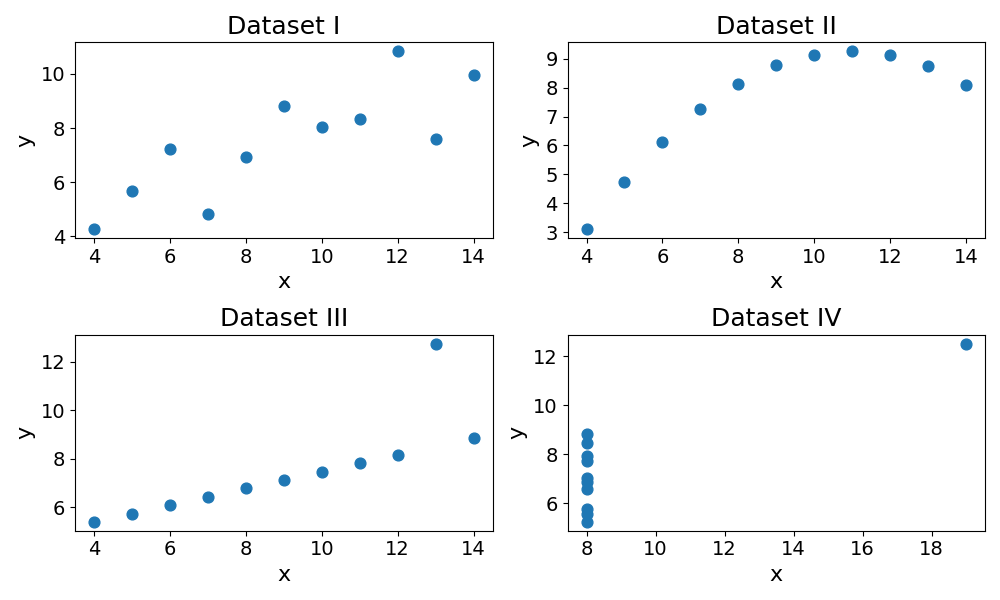
Descriptive statistics for Anscombe’s quartet:
| Dataset | Mean x | Mean y | Var x | Var y | Std x | Std y |
|---|---|---|---|---|---|---|
| I | 9 | 7.5 | 10 | 3.75 | 3.16 | 1.94 |
| II | 9 | 7.5 | 10 | 3.75 | 3.16 | 1.94 |
| III | 9 | 7.5 | 10 | 3.75 | 3.16 | 1.94 |
| IV | 9 | 7.5 | 10 | 3.75 | 3.16 | 1.94 |
This statistical paradox is good reminder that descriptive statistics are remain a reduction of reality.
20.3.2 Standardising series with Mean and Standard Deviation
20.3.2.1 Mean Centre
Going back to the three example series:
How could these be standardised so that they have the same mean and spread?
First, by subtracting the mean to each observation, the two series could both be centred around 0.
\[ x_{\text{mean centred}} = x - \bar{x} \]
A good first step:
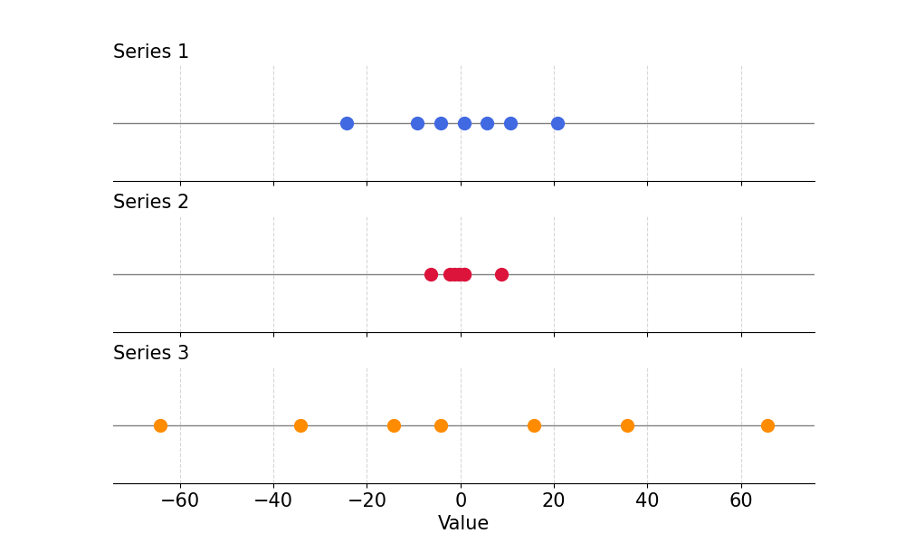
But the three series still have widely different spreads.
20.3.2.2 Variance Scaling
To make sure both series have the same variance, or spread around the mean, you could simply divide all numbers of the resulting series by the standard deviation:
\[ x_{\text{standardised}} = \frac{x - \bar{x}}{\sigma} \]
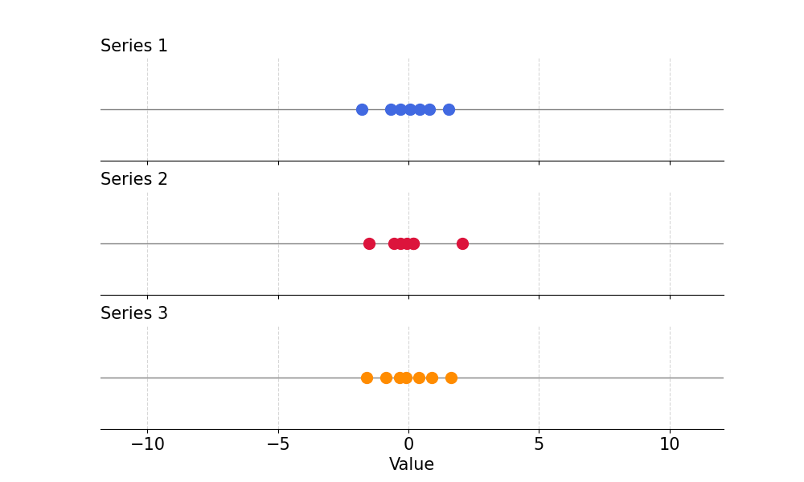
Standardising series in this way, we preserve the information they contain while aligning their mean and variance.
20.3.2.3 Example
Let’s go back to the example data and scale the Size (m²) series:
| Property | Size (m²) | Number of rooms | Price (k €) |
|---|---|---|---|
| A | 60 | 2 | 320 |
| B | 80 | 3 | 400 |
| C | 120 | 5 | 350 |
| D | 70 | 2 | 310 |
| E | 150 | 6 | 600 |
| F | 90 | 4 | 330 |
To do so, we need to compute the series mean and variance:
\[\begin{aligned} \text{Mean} &= \frac{60 + 80 + 120 + 70 + 150 + 90}{6} = \frac{570}{6} = 95 \\ \text{Variance} &= \frac{(60 - 95)^2 + (80 - 95)^2 + (120 - 95)^2}{6} \\ &\quad + \frac{(70 - 95)^2 + (150 - 95)^2 + (90 - 95)^2}{6} \\ &= \frac{5750}{6} \approx 958.3 \\ \text{Standard Deviation} &= \sqrt{\text{Variance}} = \sqrt{958.3} \approx 31 \end{aligned} \]
Standardised series:
| Property | Size (m²) | Scaled Size |
|---|---|---|
| A | 60 | \(\frac{60-95}{31} = -1.13\) |
| B | 80 | \(\frac{80-95}{31} = -0.48\) |
| C | 120 | \(\frac{120-95}{31} = 0.81\) |
| D | 70 | \(\frac{70-95}{31} = -0.81\) |
| E | 150 | \(\frac{150-95}{31} = 1.77\) |
| F | 90 | \(\frac{90-95}{31} = -0.16\) |
Exercise 20.4
| Property | Size (m²) | Number of rooms | Price (k €) |
|---|---|---|---|
| A | 60 | 2 | 320 |
| B | 80 | 3 | 400 |
| C | 120 | 5 | 350 |
| D | 70 | 2 | 310 |
| E | 150 | 6 | 600 |
| F | 90 | 4 | 330 |
Standardise the “Number of Rooms” series.
That is it for scaling methods, well done for making it this far! The following section will cover some of the practical details, but no more maths, I promise.
20.4 Information Leakage
Data preprocessing is a common source of information leakage. Descriptive statistics like the minimum, maximum, mean and standard deviation of a series are a source of information.
When applying Min-Max Scaling or Standardisation, use descriptive statistics (like min and max) computed from the training set only. When generating predictions on the test set, preprocess the data using the descriptive statistics of the training set.
As an example, for Min-Max Scaling, you would use the minimum and maximum of the training set to preprocess the test data. This sounds counter-intuitive and a lot of work, why should we bother?
The answer to that question can be found in the reason we split the data into train and test sets. We want to estimate how the model would perform on unseen data.
In the case of property pricing, imagine you have trained your model using Min-Max Scaler, and that a new property comes in, ready to be priced. How would you scale the features (area and number of rooms) of this new property?
The descriptive statistics of this property are irrelevant as you only have a single observation. You would use the min and max of the training data, the only data you have. Because the purpose of the test set is to simulate what would happen at prediction time, it makes sense to treat it in the same way.
In Machine Learning jargon, these scaling methods are fitted to the training data, and applied to the test set. The transformation is based on metrics calculated on the training set and applied to the test set.
20.5 Final Thoughts
Some models like KNN require numerical features to be on the same scale. Otherwise, features with the largest variance (here surface area) will dominate distance calculations. This chapter reviewed two ways to scale numerical features:
- Min-Max Scaling
- Standardisation
Both of these need to be applied with care to avoid information leakage between the train and test sets. The way to do so is to use the descriptive statistics of the training set to preprocess the test data. This is what happens at inference.
This is it, you made it! This was the last chapter of the Data Preprocessing section. The next section will put everything together - applying the book’s content to an end-to-end Machine Learning project.
20.6 Solutions
Solution 20.1. Exercise 20.1
Given the data:
| Property | Size (m²) | Number of rooms |
|---|---|---|
| A | 60 | 2 |
| B | 80 | 3 |
| C | 120 | 5 |
| D | 70 | 2 |
| E | 150 | 6 |
| F | 90 | 4 |
Min-Max Scaling formula: \[ \text{Scaled Value} = \frac{x - x_{\text{min}}}{x_{\text{max}} - x_{\text{min}}} \]
- Surface Area (Size in m²)
- \(x_{\text{min}} = 60\)
- \(x_{\text{max}} = 150\)
| Property | Size (m²) | Scaled Size (\(x'\)) |
|---|---|---|
| A | 60 | \(\frac{60-60}{150-60} = 0\) |
| B | 80 | \(\frac{80-60}{150-60} = \frac{20}{90} \approx 0.222\) |
| C | 120 | \(\frac{120-60}{150-60} = \frac{60}{90} \approx 0.667\) |
| D | 70 | \(\frac{70-60}{150-60} = \frac{10}{90} \approx 0.111\) |
| E | 150 | \(\frac{150-60}{150-60} = 1\) |
| F | 90 | \(\frac{90-60}{150-60} = \frac{30}{90} \approx 0.333\) |
- Number of Rooms
- \(x_{\text{min}} = 2\)
- \(x_{\text{max}} = 6\)
| Property | Number of rooms | Scaled Rooms (\(x'\)) |
|---|---|---|
| A | 2 | \(\frac{2-2}{6-2} = 0\) |
| B | 3 | \(\frac{3-2}{6-2} = \frac{1}{4} = 0.25\) |
| C | 5 | \(\frac{5-2}{6-2} = \frac{3}{4} = 0.75\) |
| D | 2 | \(\frac{2-2}{6-2} = 0\) |
| E | 6 | \(\frac{6-2}{6-2} = 1\) |
| F | 4 | \(\frac{4-2}{6-2} = \frac{2}{4} = 0.5\) |
Scaled Data
| Property | Scaled Size | Scaled Rooms |
|---|---|---|
| A | 0 | 0 |
| B | 0.222 | 0.25 |
| C | 0.667 | 0.75 |
| D | 0.111 | 0 |
| E | 1 | 1 |
| F | 0.333 | 0.5 |
Solution 20.2. Exercise 20.2
| Series 1 | Series 2 |
|---|---|
| 1 | 4 |
| 2 | 8 |
| 4 | 10 |
| 5 | 12 |
| 8 | 16 |
\[ \text{Mean}_{x_2} = \frac{4 + 8 + 10 + 12 + 16}{5} = 10 \]
Solution 20.3. Exercise 20.3
| Series 1 | Series 2 |
|---|---|
| 7 | 4 |
| 8 | 8 |
| 10 | 10 |
| 11 | 12 |
| 14 | 16 |
For Series 2: [4, 8, 10, 12, 16]:
\[ \bar{x}_2 = \frac{4 + 8 + 10 + 12 + 16}{5} = 10 \]
Variance: \[\begin{aligned} \mathrm{Var}(x_2) &= \frac{(4-10)^2 + (8-10)^2 + (10-10)^2 + (12-10)^2 + (16-10)^2}{5} \\ &= \frac{36 + 4 + 0 + 4 + 36}{5} = \frac{80}{5} = 16 \end{aligned} \]
Solution 20.4. Exercise 20.4
| Property | Size (m²) | Number of rooms | Price (k €) |
|---|---|---|---|
| A | 60 | 2 | 320 |
| B | 80 | 3 | 400 |
| C | 120 | 5 | 350 |
| D | 70 | 2 | 310 |
| E | 150 | 6 | 600 |
| F | 90 | 4 | 330 |
\[ \text{Mean} = \frac{2 + 3 + 5 + 2 + 6 + 4}{6} = \frac{22}{6} \approx 3.67 \] \[ \begin{aligned} \text{Variance} &= \frac{(2 - 3.67)^2 + (3 - 3.67)^2 + (5 - 3.67)^2}{6} \\ &\quad + \frac{(2 - 3.67)^2 + (6 - 3.67)^2 + (4 - 3.67)^2}{6} \\ &= \frac{13.33}{6} \approx 2.22 \end{aligned} \] \[\text{Standard Deviation} = \sqrt{\text{Variance}} = \sqrt{2.22} \approx 1.49\]
Standardised series
| Property | Number of rooms | Scaled Number of Rooms |
|---|---|---|
| A | 2 | \(\frac{2 - 3.67}{1.49} = -1.12\) |
| B | 3 | \(\frac{3 - 3.67}{1.49} = -0.45\) |
| C | 5 | \(\frac{5 - 3.67}{1.49} = 0.89\) |
| D | 2 | \(\frac{2 - 3.67}{1.49} = -1.12\) |
| E | 6 | \(\frac{6 - 3.67}{1.49} = 1.56\) |
| F | 4 | \(\frac{4 - 3.67}{1.49} = 0.22\) |